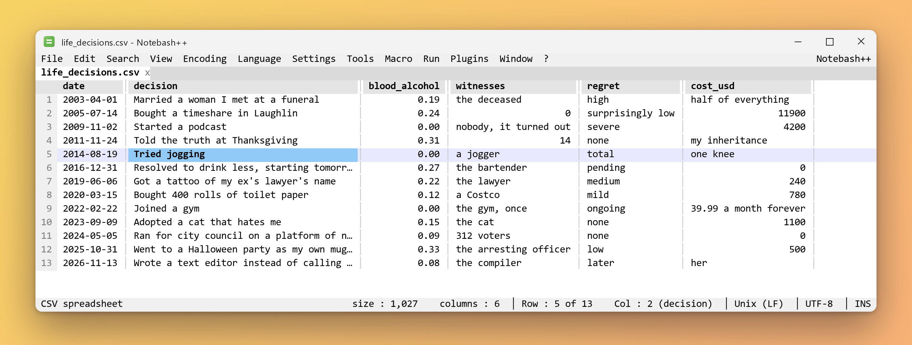
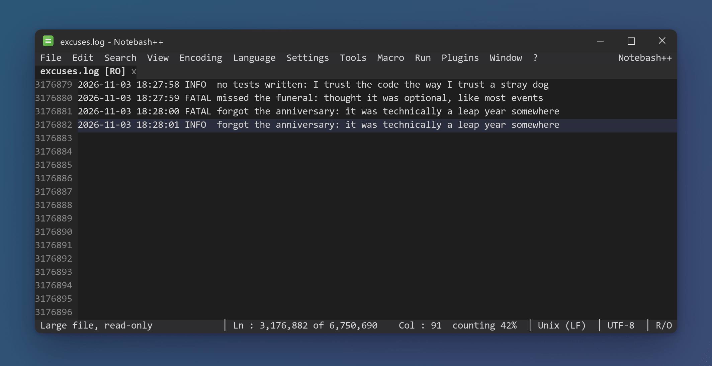
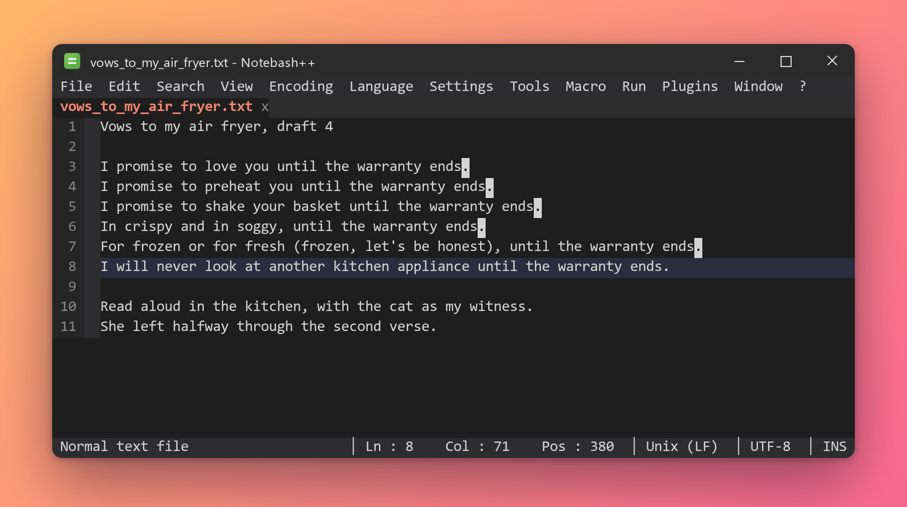
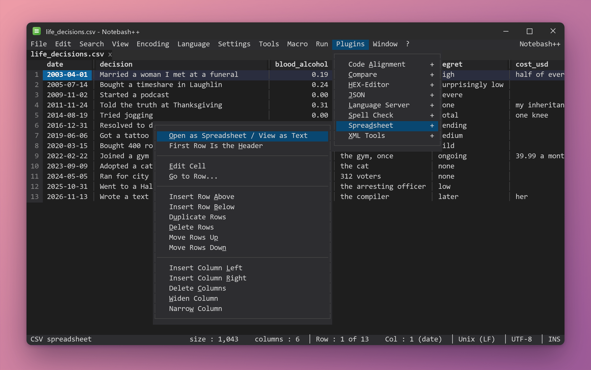
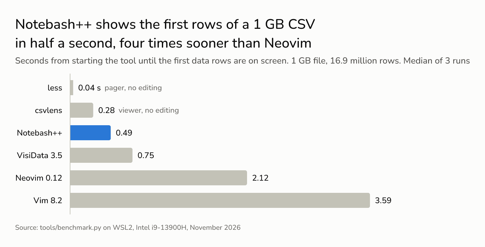
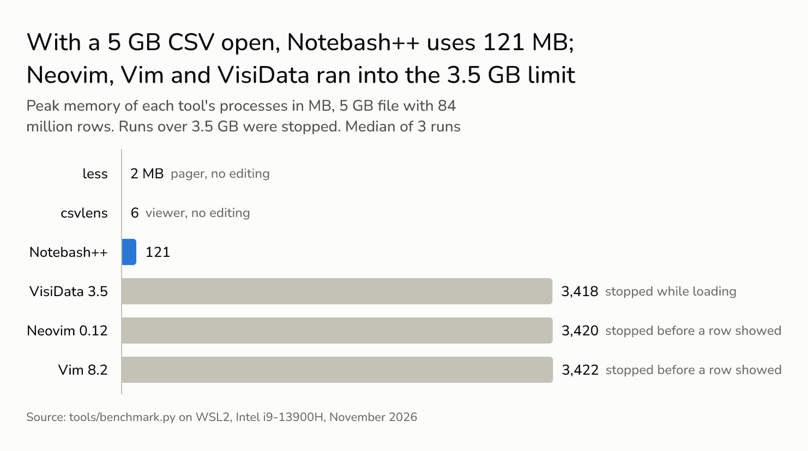

I have 20 years of Notepad++ in my fingers. Then my work moved to Linux servers and WSL, and my fingers stayed behind. So this is Notepad++ 8.5.3's keyboard, copied one shortcut at a time from its source code, running inside Neovim.
Ctrl+S saves, Ctrl+H replaces, Shift+arrows select and typing replaces the selection. Nobody asks you to learn ciw at my age.
Spreadsheet view for CSV files
A 5 GB CSV shows its first rows in 0.72 s and uses 121 MB of memory. The rows are counted in a background thread while you already scroll; the status bar says how far it got.

Typing replaces a cell, in any keyboard layout. F2 or a double click edits it, Alt+Enter puts a line break inside it, Tab and Enter move on.
Ctrl+C and Ctrl+V move tab-separated blocks, so pasting to and from Excel or Google Sheets works. Ctrl+D duplicates rows, Ctrl+L deletes them, Ctrl+Shift+Up/Down moves them, Ctrl+Z undoes.
Ctrl+S rewrites only the rows you changed. Quoting, line endings and number formats everywhere else stay byte for byte as they were, so the diff is one line.
Ctrl+F searches the whole file without loading it, Ctrl+G goes to a row. Plugins > Spreadsheet > View as Text shows the raw text when you need it.
Large files
Text files over 32 MB open in a view that reads only the lines on screen. You can scroll, jump to any line (Ctrl+G), search the whole file (Ctrl+F, F3) and copy what you see. File > Load Whole File for Editing loads files up to 1 GB the normal way when you really need to change one.

Multiple carets
Ctrl+click adds a caret. Ctrl+E selects the next match of the word or selection, Ctrl+Shift+E all of them (Notepad++ 8.6's Multi-select Next and All). Then typing, Backspace, Enter, Ctrl+V and the arrows act at every caret, and one Ctrl+Z takes it all back.

Menus, keys and the Find dialog
Every Notepad++ 8.5.3 default shortcut is there, from the File menu to the Scintilla editing keys. KEYS.md lists all of them, and Shift+F1 then any key tells you what that key does.

Find, Replace, Find in Files and Mark in one dialog with Notepad++'s options. Notepad++ (Boost) regular expressions are translated, lookarounds and $1 included. Find in Files uses ripgrep and stops at 10,000 hits.
Column mode (Alt+Shift+arrows, Alt+drag) and the Column Editor.
Macros, bookmarks, folding, Compare, word completion, smart highlighting, and the most installed plugins built in: Spell Check, JSON, XML Tools, HEX-Editor and Code Alignment.
Web pages and files on your servers: nbpp https://example.com/page.html asks whether to edit the page as HTML or as Markdown, and nbpp prod:/etc/nginx/nginx.conf opens a file over SSH with your keys. Ctrl+S writes it back in place, through a temporary file on the server, so the file keeps its owner and permissions.
Language servers with no setup: if clangd, pyright, lua-language-server or 11 others are on your path, they start for their files. F9 goes to the next problem, Ctrl+F12 to the definition. Servers that can run a project's own code, such as rust-analyzer with its build scripts, wait until you choose Plugins, Language Server, Trust This Folder, so opening a file from a download runs nothing.
Session restore: unsaved documents, carets, scroll positions, folds and split windows come back after a restart or a crash.
Messages never block typing. Errors show in a small box that fades; there is no "Press ENTER" prompt.
Dark mode, word wrap, zoom (Ctrl+= and Ctrl+-), a word count in the status bar, and Ctrl and Alt keys that work with a Hebrew or Arabic layout.
Benchmarks
Six tools opened the same 1 GB and 5 GB CSV files. Of the ones that can edit and save, Notebash++ is the only one that kept the 5 GB file under the 3.5 GB memory limit.


Median of three runs, WSL2, Intel i9-13900H, November 2026
Tool
Edits and saves
First rows, 1 GB
Last row, 1 GB
Memory, 1 GB
First rows, 5 GB
Memory, 5 GB
Notebash++
yes
0.49 s
7.8 s
111 MB
0.72 s
121 MB
Neovim 0.12
yes
2.12 s
0.01 s
1,132 MB
stopped at 3.5 GB
Vim 8.2
yes
3.59 s
0.03 s
1,118 MB
stopped at 3.5 GB
VisiData 3.5
yes
0.75 s
stopped at 3.5 GB
1.02 s
stopped at 3.5 GB
csvlens
no
0.28 s
2.2 s
6 MB
0.29 s
6 MB
less
no
0.04 s
0.02 s
2 MB
0.04 s
2 MB
less and csvlens only show files, and they show them faster than any of the editors. Ctrl+End in Notebash++ waits until every row is counted. With the file in the disk cache that runs at about 1 GB a second; from a cold disk it took 3 to 14 seconds for the 1 GB file here, and 36 seconds for the 5 GB one.
How it was measured: every tool ran in the same 120 by 30 tmux terminal on WSL2 (Intel i9-13900H, November 2026). The clock stops when the first data rows (or the file's last row) are on screen, and peak memory adds up all of the tool's processes. Each number is the median of three runs; a run over 3.5 GB of memory was stopped. Run it yourself with tools/benchmark.py /tmp/benchmark; it makes the test files, skips tools you do not have, and prints this table.
Next to other editors
Notepad++ runs on Windows, and on Linux only under Wine. Notebash++ is its keyboard inside Neovim, which runs in a terminal, so it also works on a server you reach over SSH.
It does not run Notepad++ plugins. The most installed ones are rebuilt inside it; for the rest, write Lua or ask.
A terminal never sends some keys (Ctrl+Shift+letter arrives as Ctrl+letter). The Neovide window gets all of them; see Terminals and keys.
Neovim has no bidirectional text, so Text Direction RTL mirrors the whole window.
The spreadsheet has no formulas, sorting or filtering, and I am not ready to support your accountant.
The large file view is read-only. Loading a file for editing stops at 1 GB.
With several carets, Up and Down move by file line, not by wrapped screen row.
Windows without WSL works as far as I know, which is not far, because the tests do not cover it yet.
Install
You need Neovim 0.11 or newer. Optional: ripgrep for Find in Files, pandoc for web pages as Markdown, and Neovide for every key combination.
Notebash++ runs as its own Neovim configuration (NVIM_APPNAME=notebashpp). Your normal nvim and its config are not touched. I have enough to answer for without destroying the editor you already spent a year configuring.
nbpp is the short name; notebash++ works the same. If the shell says nbpp: command not found, ~/.local/bin is not on your PATH (the default on macOS): add export PATH="$HOME/.local/bin:$PATH" to ~/.zshrc or ~/.bashrc and open a new terminal.
If nvim is missing or older than 0.11, the launcher offers to download the official Neovim release (pinned, now 0.12.6) from GitHub into ~/.local/share/notebashpp/neovim, and checks its SHA-256 before unpacking. It asks only in a terminal, and the default is no. notebash++ -installNeovim installs it without asking. A system nvim that is new enough always wins. This works on Linux (x86_64 and arm64, glibc) and macOS.
The first start links ~/.config/notebashpp to the clone. If one instance is already running, a second notebash++ file opens the file in that instance, as Notepad++ does. Notepad++'s command-line options work: -multiInst, -nosession, -n<line>, -c<column>. notebash++ -gui starts it in Neovide.
Windows with WSL
After the steps above, notebash++ -install puts Neovide in %LOCALAPPDATA%\Programs\Notebash++ and adds Notebash++ to the Start menu and the desktop. The window runs Neovim inside WSL; the clipboard goes through the bundled win32yank.exe, which keeps UTF-8 (Hebrew, Arabic, emoji) intact.
Windows without WSL
Clone into %LOCALAPPDATA%\notebashpp and run bin\nbpp.cmd (or bin\notebash++.cmd, the same thing). If Neovim is missing or too old, it offers winget install --id Neovim.Neovim -e, or prints the download link when there is no winget. I wrote this path, but the tests do not cover it yet. Please report how it goes.
Terminals and keys
A terminal cannot send every key Notepad++ uses. Ctrl+Shift+letter arrives as Ctrl+letter, Ctrl+I as Tab, Ctrl+M as Enter, and terminals and tmux keep some combinations for themselves. You press a key and several programs argue over whether you meant it. Neovide passes everything through, so use it if you want the whole keyboard.
Windows Terminal takes Ctrl+Shift+Home/End/PgUp/PgDn for scrolling, Ctrl+Shift+F, Ctrl+Tab, Alt+Enter and F11; unbind the ones you want in its settings.json. tmux keeps its prefix key (Ctrl+B by default, Go to Matching Brace in Notepad++).
More
Every shortcut and its command id is in KEYS.md. Settings, the differences from Notepad++ and how to work on the code are in the README. Bugs go to the issue tracker.